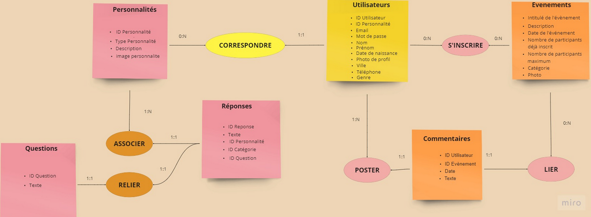
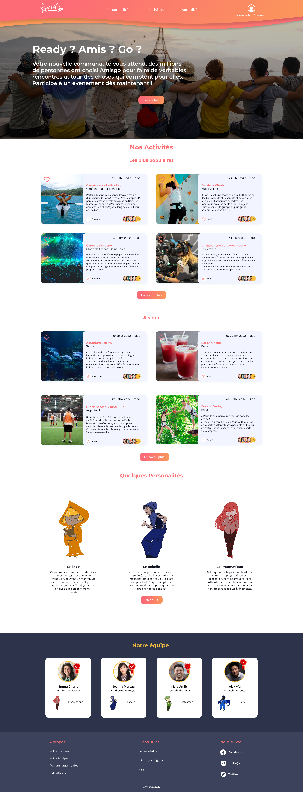
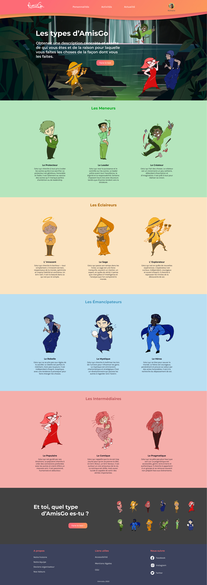

Le projet AmisGo
AmisGo est un projet qui à été réalisé en groupe dans le cadre de ma formation avec LaPasserelle. Le groupe était composé de quelques camarades développeurs issus de ma formation ainsi que de quelques designers issus de la formation en UI/UX design proposé dans le même établissement
Le projet est une Web-App se nommant AmisGo consistant à mettre en relation des utilisateurs à travers différentes activités tels que l'escalade, la randonnée, une sortie au restaurant etc. Sur le site il est également possible de passer un test de personnalité. A la suite de celui-ci, les utilisateurs se voient attribuer une personnalité (parmis 12 disponibles) qu'ils peuvent afficher sur leur profil personnel
Comment s'est construit le projet
La création du projet à débuté par une phase de brainstorming concernant le thème. Une fois que le thème à été convenu, un benchmark à été réalisé afin de comparer les principaux sites ayant le même but que AmisGo(tels que meetup, ovs ou encore frimake)
Une fois le benchmark finalisé, j'ai commencé à travailler en méthode AGILE-SCRUM avec des sprints de une semaine, des réunions quotidiennes entre développeur pour voir l'avancée de chacun et des revues de sprint à chaque fin de semaine avec l'equipe design.
Schéma méthode agile - scrum
Base de données (Méthode Merise)
Lors de la création du projet, j'ai dû créer une base de données. Pour ce faire, j'ai d'abord dû utiliser la méthode Merise qui m'a permit de mieux visualiser l'ensemble de la base de données que je voulais créer à partir de notre cahier des charges ainsi que des retours de l'equipe design et de leur userflow / userstory.
Avec la méthode Merise nous avons pu associer une entité (une entité est un regroupement d'informations appelés "attributs") à une autre en mettant en avant leurs cardinalités.
Pour mettre en place cette méthode je me suis servi de l'application Miro qui est une application permettant de créer des cartes mentales.
Base de données (Création de la base de données)
Une fois la méthode Merise terminée j'ai du créer la base de données à partir de l'interface de PhpMyAdmin et hydrater celle-ci avec des informations cohérentes
Mise en place de Symfony
Composants d'accès aux données
Une fois la base de données crée j'ai mis en place Symfony dans le projet afin d'avoir accès aux informations que je souhaite à partir de repository grâce aux méthodes de l'ORM doctrine tels que findBy(), findAll() ou findOneBy() ou encore de queryBuilder permettant de personnaliser la requête.
Après avoir crée un repository je peux transmettre les informations issues de celui-ci à un contrôleur pour les afficher sur le template que je souhaite.
Système d'authentification
Pour que les visiteurs puissent s'inscrire à un évènement nous avons mis en place un système d'authentification avec la commande bin/console make:security:form-login
Crud
Afin d'avoir facilement la possibilité de créer de nouveaux évènements sur le site j'ai dû utiliser la commande bin/console make:crud qui m'a crée un nouveau contrôleur avec différentes routes permettant de voir/modifier/supprimer/ajouter un évènement
Sécurité
Nous avons mis en place sur le site un système de hierarchisation pour que les utilisateurs lambda ne puissent pas avoir accès a la route mennant a la suppression d'un évènement par exemple. Pour ce faire nous avons utilisé la commande bin/console make:security puis nous avons dû modifier le fichier security.yaml
Intégration à partir de wireframe
A partir de wireframe et de maquette réalisé à l'aide de figma j'ai pu commencer à intégrer des pages web avec Twig un moteur template (outil qui simplifie la syntaxe) associé à Symfony qui suit le principe de MVC (modèle vue contrôleur) et permet de créer des vues dynamiques en utilisant des fichiers de template alimentés par des controllers (ayant reçu des informations issues d'un repository).
La page d'accueil
La page présentant les différentes personnalités
Algorithme du test de personnalité
Nous avons 12 types de personnalités différentes rangées dans 4 catégories soit 3 personnalités par catégorie
Le test comporte 5 séries de questions (soit 21 questions et 53 réponses)
- série 0 : 4 à 5 questions avec 4 réponses possibles, permettant de déterminer la catégorie
- série 1 : 4 questions avec 3 réponses possibles pour déterminer la personnalité parmi les 3 présentes dans la catégorie 1
- série 2 : 4 questions avec 3 réponses possibles pour déterminer la personnalité parmi les 3 présentes dans la catégorie 2
- série 3 : 4 questions avec 3 réponses possibles pour déterminer la personnalité parmi les 3 présentes dans la catégorie 3
- série 4 : 4 questions avec 3 réponses possibles pour déterminer la personnalité parmi les 3 présentes dans la catégorie 4